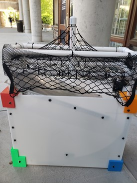

Projects > Automated Mast Sorting Device
Automated Mast Sorting Device
August 2018 - May 2019
 Figure 1: Final design for mast sorting device.
Background
Figure 1: Final design for mast sorting device.
Background
At the base of every forest ecosystem are mast, or the
fruits of trees and shrubs, which includes acorns, hickory
nuts, and beech nuts. Mast play several
fundamental roles in ecology, from sustaining animal
populations to influencing reproduction patterns.
Variations in masting cycles can cause
fluctuations in animal populations and can provide
important information relating to weather patterns and
other environmental factors such as climate change.
One of the main goals of the Duke Forest is to study
masting cycles in order to better understand forest trends
and to educate the public about the environment. To
conduct this research, the Duke Forest staff collects
thousands of mast to study. The original method of
mast collection employed by Duke Forest
researchers was a simple laundry basket with a net on
top to separate out sticks and leaves. However, it
takes Duke Forest researchers a significant amount of
time to sort the collected mast by genus and to
remove all other organic debris by hand for testing
after collection. Thus, the Duke Forest researchers
sought a design which would ultimately remove organic
debris from the collected mast as well as sort
the mast by genus. In the Fall of 2018, this design
project was assigned to a group of first-year Duke engineering students in
partnership with Duke University’s First Year Design
experience to give practical, real-world applicable
tasks to incoming freshman engineers. The project was
then continued in the Spring of 2019 by a smaller
team. The final design for the mast collector is shown
in Figure 1.

Figure 2: Final prototype of mast collector.
Key Design Features
Before mast can be sorted by genus, they first need to be isolated from other natural debris. In pursuit of
this goal, the device was designed with a clear focus on the efficacy of the collector: accurately filtering
sticks, leaves, and other debris while still collecting all of the mast. Other factors were also considered,
such as the cost, weight, and durability of the collector. The final mast collector design is
split into two parts: an upper collector and a lower collector.
The as-built prototype is shown in Figure 2.
Upper Collector
To prevent larger branches from falling into the device and clogging up the lower
collector, the upper filter was created using a PVC
frame and a flexible mesh net. The goal of
the upper filter is to block out larger debris that
could possibly impede the collector’s function by
blocking the metal ramp while still allowing mast to
pass through, allowing for the collector to operate
for a longer time before requiring maintenance. A closer
look at the upper collector is presented in Figure 3.
Lower Collector
The lower collector, shown in Figure 4, is made out of a strong and
lightweight polycarbonate material and held
together by lightweight 3D printed plastic joints
and metal L-brackets, which allows for ease of
transportation and maneuverability, along with
making the entire design modular. The two ramps are
made from aluminum sheet metal. This
component of the device separates mast from
other tree debris using their kinetic energies.
Since mast are more spherical in shape, they are
able to roll down the ramp while other debris
slides at a much slower speed. This difference
in speed allows the mast to launch over the gap
between the ramp and the collection bin while sticks and
leaves fail to clear the gap. The unwanted debris
then slides into the gap and out of the bottom of the
mast collector onto the forest floor.
Original Design and Poster Presentation
At the end of the Fall 2018 semester, the team presented the design and prototype at a poster session. This poster features the prototype constructed before the spring redesign, so it is made from wood instead of polycarbonate. It is also considerably larger than the redesigned iteration and lacks the upper collector portion.